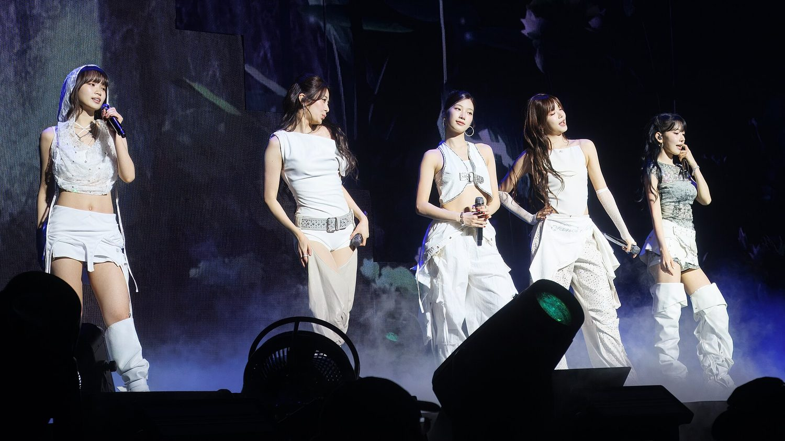

2026 LE SSERAFIM TOUR ‘PUREFLOW’ IN TAIPEI
台北演唱會
2026 年 11 月 14 日（六）、15 日（日）， 台北連唱兩天，地點在林口體育館。

時間與場地
- 第一場
- 11 / 14（六）18:00 開演
- 第二場
- 11 / 15（日）18:00 開演
- 場地
- 林口體育館國立體育大學綜合體育館 NTSU ARENA
| 項目 | 內容 |
|---|---|
| 巡演名稱 | 2026 LE SSERAFIM TOUR ‘PUREFLOW’ IN TAIPEI |
| 日期 | 2026 年 11 月 14 日（六）、11 月 15 日（日） |
| 開演時間 | 兩天皆 18:00 |
| 場地 | 國立體育大學綜合體育館（NTSU ARENA，一般稱林口體育館） |
| 位置 | 桃園市龜山區，國立體育大學校內 —— 不在台北市區 |
交通要留時間
場地雖然叫「台北場」，實際位置在桃園龜山／林口交界的國立體育大學校內。 搭捷運機場線到林口站之後仍需轉乘或步行一段路，散場時人潮集中。
建議提早出門，並且事先查好回程交通 —— 演出約 18:00 開始， 散場時間會接近大眾運輸的尾班車時段。
這是什麼巡演
巡演名稱 PUREFLOW，來自 2026 年 5 月的第二張正規專輯《PUREFLOW Pt. 1》。 官方的說法是：這個名字象徵五位成員與 FEARNOT（粉絲）之間彼此連結、匯聚並持續流動的能量， 也代表團體進入更成熟、更堅定的新階段。
歌單預計會集結出道以來的熱門作品加上新專輯曲目 —— 所以 ANTIFRAGILE、Perfect Night、CRAZY 這些幾乎一定會唱， 加上 BOOMPALA、Made My Night 等新歌。
巡演的其他站
台北只是其中一站，這輪巡演還包括：
- 韓國 仁川
- 日本 大阪、神奈川等城市
- 美國 9 站
- 歐洲 5 座城市
- 亞洲 台北、新加坡、馬尼拉
關於「高雄場」
有部分國外票務彙整網站列出 12 月 13 日高雄場， 但官方公告與台灣各家媒體的報導都只有台北兩場。 這筆資訊無法確認，請勿據此規劃，以官方公告為準。